Dans cette séance, tous les graphes considérés sont orientés. Si vous souhaitez
Le 4 Janvier 2026, sur la station de ski du massif du Pech de la Citadelle...
Zut ! C'est l'heure de souper, mais je suis encore tout en haut des pistes ! Par où descendre le plus vite possible ?
Soit $D = (V,A)$ un graphe orienté, pondéré d'un coût $c$ pour chaque arc de $D$.
Soit $s$ un sommet de $V$.
On définit le coût $c(P)$ d'un chemin $P = v_0 e_1 v_1 \ldots e_k v_k$: $$c(P) := \displaystyle \sum_{e \in P} c(e).$$
Pour chaque sommet $t$ de $V$, on cherche un $s-t$ chemin de coût minimum. On note $d(s,t)$ la distance entre $s$ et $t$, c'est à dire le coût minimum d'un $s-t$ chemin.
Une $s$-arborescence est un graphe orienté $F = (V,A)$ tel qu'il existe un unique $s-v$ chemin dans $F$ pour tout $v \in V - s$.
Ces deux caractérisations sont équivalentes:
Les algorithmes de plus court chemin que nous allons voir construisent une $s$-arborescence $F$ dans notre graphe $D$ telle que l'unique $s-v$ chemin (avec $v \in V - s$) est un plus court chemin.
Soit $a = uv$ un arc de $D$.
Supposons qu'on connaisse déjà un $s-u$ chemin $P$ et un $s-v$ chemin $Q$.
Si $c(P) + c(uv) \leq c(Q)$, alors $P + uv$ est un $s-v$ chemin plus court que $Q$ !
On introduit alors la procédure suivante, permettant de mettre à jour les meilleurs chemins $s-v$ chemins au fur et à mesure.
Entrée: Graphe orienté $D = (V,A)$ pondéré par un coût $c: A \rightarrow \mathbb{R}$, un sommet $v \in V$, la distance connue $d_w$ d'un $s-w$ chemin $P_w$ pour tout $w \in V$, le prédécesseur connu $p_w$ de $w$ dans $P_w$ pour tout $w \in V - s$.
Sortie: Distance connue $d_v$ et prédécesseur connu $p_v$ mis à jour.
Cette procédure utilise une quantité constante de mémoire et itère sur chaque arc adjacent à $v$.
Complexité: la complexité de la procédure de Scan dépend de la représentation du graphe $D$ ! Dans le cas où le graphe est représenté sous forme de matrice d'adjacence, le coût de cette procédure est de $\Theta(V)$ !
Cependant, si le graphe est représenté par listes d'adjacences, le coût de l'algorithme est exactement $\Theta(d(v)) = O(V).$
On supposera donc que $D$ est représenté par listes d'adjacences.
Notre mise en situation ne contient pas de cycle. Voilà qui est bien pratique !
Tout graphe acyclique admet un tri topologique $v_1 v_2 \ldots v_n$, tel que pour toute arc $a = v_i v_j$, on a $i \leq j$.
Ainsi, la distance d'un sommet $s$ à un sommet $v$ ne dépend pas des successeurs de $v$, et on peut utiliser la procédure de Scan ci-dessus sur les sommets dans un ordre topologique.
Entrée: Graphe orienté acyclique $D = (V,A)$ pondéré par un coût $c: A \rightarrow \mathbb{R}$, un sommet $s \in V$.
Sortie: Une $s$-arborescence $F$ dont l'unique $s-v$ chemin est un plus court chemin, pour chaque $v$ accessible depuis $s$.
Complexité: Chaque arc est exploré au plus une fois par la procédure Scan, un tri topologique a une complexité de O(V + A), donc la complexité de l'algorithme de Bellman est de O(V + A).
On prend maintenant en compte les téléphériques et autres systèmes pour remonter les pistes.
Notre graphe a maintenant des circuits, et n'a plus d'ordre topologique. On a besoin d'une autre approche.
Si tous les coûts sont positifs ou nuls, un plus court chemin ne peut pas contenir de circuits. On peut alors explorer les sommets dans l'ordre de leur distance à $s$, découvrant cet ordre petit à petit.
Entrée: Graphe orienté $D = (V,A)$ pondéré par un coût $c: A \rightarrow \mathbb{R}$ tel que $c(a) \geq 0$ pour tout $a \in A$, un sommet $s \in V$.
Sortie: Une $s$-arborescence $F$ dont l'unique $s-v$ chemin est un plus court chemin, pour chaque $v$ accessible depuis $s$.
Complexité: ici aussi, chaque arc est examiné au plus une fois par la procédure Scan et chaque sommet est regardé au plus une fois. Le coût de cet algorithme vient surtout de récupérer le sommet $v$ tel que $y_v$ est minimum.
La structure de donnée utilisée pour $S$ est donc très importante. Les opérations réalisées sur $S$ correspondent à:
On reconnait ici les avantages d'un tas! (quelle serait la complexité si on utilisait un tableau ou une liste?)
Dans le cas d'un tas binaire, ces deux opérations coûtent $log(V)$ et on obtient une complexité de $O((E + V) \log V)$.
En utilisant un tas de Fibonacci, on obtiendrait une complexité amortie de $\Theta(E + V \log V)$.
Bon, il est difficile de trouver un exemple physiquement réaliste, mais mathématiquement parlant, pourquoi se limiter à un coût positif et pourquoi ne pas considérer des coûts négatifs ? Des situations pertinentes pour ce faire peuvent apparaître pour étudier l'économie ou même des jeux.
Sauf que catastrophe: la notion de plus court chemin n'est plus forcément présente.
Considérez un circuit $C$ où la somme des coûts des arcs qui le compose est négative. Alors, si on prend un sommet $s$ qui peut atteindre $C$, et un sommet $t$ atteint par $C$, pour tout $s-t$ chemin de coût total $\ell$, il existe un $s-t$ chemin qui passe par ce circuit un certain nombre de fois avec un cout $\ell' < \ell$ !
On dit que $C$ est un circuit absorbant. Dès lors que notre graphe $D$ contient un circuit absorbant, pour chaque paire de sommets $s$ qui peut atteindre $C$ et $t$ qui est atteint par $C$, il n'y a pas de plus court $s-t$ chemin.
Les coûts négatifs peuvent être pertinents dans l'analyse de certains jeux. Par exemple, dans le jeu de cartes Magic the Gathering, un joueur possède des cartes avec lesquelles il peut intéragir, souvent en échange d'une ressource (mana). Certaines cartes ont l'effet de donner plus de mana lorsqu'elles sont activées.
Le joueur peut chercher à trouver une manière de jouer certaines cartes en dépensant le moins de mana possible.
La carte Monolithe de Basalt peut être activée pour générer 3 mana au joueur, mais si la carte Artéfact de pouvoir est sur le terrain, Monolithe de Basalt peut être désactivé avec un coût de 1 mana. On a ici un circuit absorbant: on peut générer une quantité de mana infinie !
Entrée: Graphe orienté $D = (V,A)$ pondéré par un coût $c: A \rightarrow \mathbb{R}$, un sommet $s \in V$.
Sortie: Une $s$-arborescence $F$ dont l'unique $s-v$ chemin est un plus court chemin (si $D$ n'a pas de circuit absorbant), pour chaque $v$ accessible depuis $s$.
Complexité: On réalise $|V|$ itérations où on regarde chaque arc à travers la procédure de Scan. On a donc une complexité en $O(VE)$.
L'algorithme de Bellman-Ford est le plus souvent présenté par la programmation dynamique.
Au lieu d'utiliser la procédure de Scan et la variable $y$, on définit $w_k(v)$ le coût minimum d'un $s-v$ chemin de longueur au plus $k$.
On initialise $w_0(s) = 0$ et $w_0(v) = \infty$ pour tout $v \in V - s$.
On peut alors démontrer l'équation suivante: $$w_{i+1}(v) = \min_{uv \in A} \{w_i(v), w_i(u) + c(uv)\}.$$ En d'autres termes: le plus court chemin avec au plus $i+1$ arcs est soit :
Concernant la variable $p$ (les parents dans $F$), si le minimum est $w_i(v)$, alors on ne change rien, s'il s'agit de $w_i(u) + c(uv)$ pour un certain sommet $u$, alors on met à jour $p_v = u$.
La question de la recherche de plus court chemin n'a de sens que si notre graphe pondéré n'a pas de circuits absorbants !
Suivant les particularités du graphe, on a plusieurs algorithmes à notre disposition:

Donnez un graphe orienté pondéré sans circuit absorbant, ainsi qu'un sommet $s$ de ce graphe, tel que l'algorithme de Dijkstra ne trouve pas les chemins de coût minimaux à partir de $s$.
Soit $D$ un graphe orienté pondéré et soit $P$ un plus court $(s,p)$-chemin. Soient $x$ et $y$ deux sommets dans $P$.
Montrez que le sous-chemin $P[x,y]$ est un plus court $(x,y)$-chemin.
Voici une formulation graphique des tâches nécessaires à la réalisation d'un projet, comme vu précédemment.
Déterminez le temps nécessaire pour la réalisation de ce projet.
Déterminez le temps au plus tôt et au plus tard où chaque tâche peut être réalisée.
Réduire le coût de quelle tâche permettrait de réduire le temps nécessaire pour ce projet ?